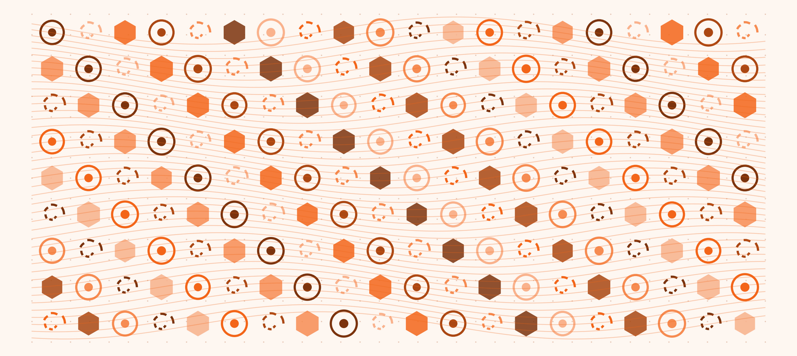
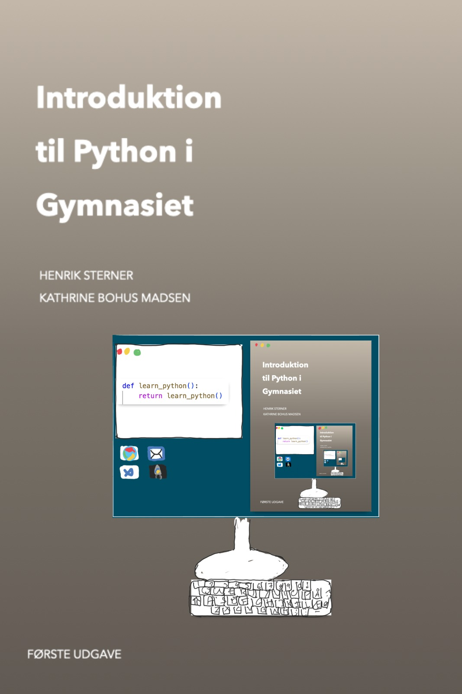

Python til undervisning og nysgerrige begyndere
Lær Python.
Forstå din kode.
Byg noget selv.
Pythonbogen samler en dansk lærebog, en lokal AI-tutor og interaktive laboratorier. Gå fra dine første kodelinjer til projekter med spil, data og kunstig intelligens — med forklaringer og øvelser undervejs.
Til elever og undervisere i gymnasiet — og udvalgte begynderforløb i folkeskolens ældste klasser.
Se VygotskAI i brug
Et eksempel på en løkke
Én instruktion.
En hilsen til hver elev.
En løkke gentager den samme handling for hvert navn på listen. Følg programmets trin og se, hvilken hilsen der kommer ud.
Læringspointe Variablen elev peger på et nyt navn for hver omgang.
hej_klassen.pyVisualisering af et Python-eksempel
klasseliste = ["Sara", "Ali", "Emil", "Freja"]
for elev in klasseliste:
print(f"Hej {elev}")Output
0 af 4 hilsner
Læs alle outputlinjer
Hej Sara Hej Ali Hej Emil Hej Freja

Fra første program til selvstændige projekterEt fagligt fundament, du kan bygge videre på
Start med det grundlæggende.
Vælg din vej videre.
Bogen begynder med de første programmer, datatyper, betingelser, løkker og funktioner. Herfra fortsætter den med blandt andet objektorientering, systemarkitektur, data og maskinlæring.
Praktiske eksempler, opgaver og illustrationer hjælper dig med at forbinde teori med kode.

En hyldest til de første idéer
Når kode bliver til noget, du kan se
Den oprindelige hjemmeside viste en håndtegnet computer med bogens forside på skærmen. Vi har taget illustrationen med videre som en påmindelse om, at programmering starter med nysgerrighed — og vokser, når en idé får form.
I Turtle-laboratoriet kan du selv omsætte korte Python-instruktioner til streger, mønstre og små billeder.
Tegn med Python TurtleEt Python-værksted på din computer
Læs opgaven.
Prøv koden.
Spørg om næste skridt.
VygotskAI samler bog, opgaver, Python-kode og en lokal AI-tutor i det samme arbejdsrum. Du kan følge en forklaring, afprøve en ændring og få hjælp til at forstå resultatet.
- Arbejd med tekstkode eller visuelle blokke.
- Se output, fejl og figurer i appen.
- Vælg selv om og hvornår du bruger tutorhjælp.
Små aktiviteter. Store spørgsmål.
Hvad vil du undersøge?
Start enkelt, ændr en ting, og læg mærke til hvad der sker.
Se de otte laboratorier
Laboratorierne åbner i browseren. Nogle aktiviteter kan kræve internet.
Læs · Forudsig · Afprøv · Forklar
Sådan bliver teori til forståelse
Læs et eksempel i bogen. Gæt, hvad programmet gør. Afprøv idéen, og forklar hvorfor resultatet blev, som det blev.
Få begrebet på plads
Se hvordan en instruktion eller datastruktur fungerer.
Gæt før du kører
Beskriv det resultat, du forventer.
Ændr og undersøg
Brug et laboratorium til at se effekten af dine valg.
Gør din tanke tydelig
Brug dine egne ord, og spørg tutoren om hjælp, når det passer til opgaven.
For elever
Jeg vil lære og prøve selv
Start med en kort læseprøve, følg et kodeeksempel eller åbn et begyndervenligt laboratorium.
Find en begynderrute →For undervisere
Jeg vil planlægge et forløb
Se bogens progression, en konkret aktivitet og de lokale valg af tutorhjælp.
Se ressourcer til undervisningen →Vælg din vej ind i Python